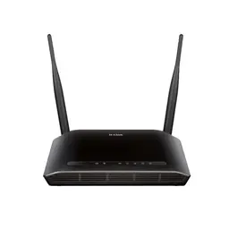

Identitas Pembuat
Nama : Almira Kalila Hatibie
NIM : 607012500059
Kelas : D3SI-49-04
Foto Mahasiswa

Foto berwarna dengan kegiatan bebas
Mata Kuliah
Jaringan Komputer
Pembahasan Perangkat Jaringan
Router
Fungsi: Menghubungkan dua atau lebih jaringan yang berbeda.
Jenis:
- Router Kabel
- Router Wireless
- Router Core
Lampiran
File tutorial hosting dan pembuatan web terlampir dalam bentuk PDF.